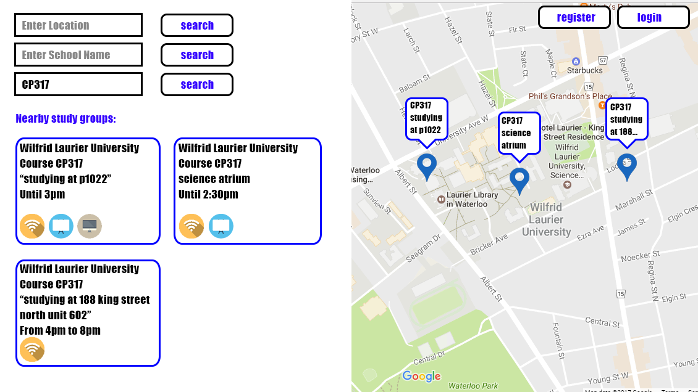

Study Space
Requirements Document
Version 1.4 - 6/1/2017
1. Introduction
Study Group Finder is a web-based application that allows students in any university to post and find study group locations. The purpose of this application is to allow students to find study groups with ease. By doing so, students will be able to help each other achieve their academic goals as well as make new acquaintances.
1.1 Purpose
This document outlines the requirements of the Study Group Finder application and describes its features. During the creation of the application, everyone involved will refer to this document to understand the requirements as well as use it as the basis for their work.
1.2 Scope
The software being produced is a website called Study Group Finder. This software will be used by students to search for people nearby who are studying or doing homework. The objective is to bring students together so they may more easily achieve their academic goals.
1.3 Document Lexicon
1.3.1 Definitions
Course: a course taken at a university, often represented by a course code, ex. CP317
User: someone who accesses the website, who we will assume is a student
Registered User: a user who has created an account and logged in
Guest User: a user who has not created an account or logged in
Beacon: a study location and the details of that study group, such as the course code and . session time remaining
Beacon Description: a user entered description of the Beacon, where they state specifics of the location, such as the room number, and what they are currently working on.
Tags: A tag is a small icon which will appear on the left side of the display. This tag will provide information about a group's location to the user. Such as if the location takes place in a computer lab or if the location has a whiteboard.
Beacon Preview: The Beacon as it appears on the map. When a user moves their mouse over the beacon, this icon will give a small preview about the given beacon’s description. For a more detailed description of the location the user may go to the left side of the page.
Arrival Time: The time the Beacon creator will arrive at the study location.
Departure Time: The time the Beacon creator will leave the study location.
1.3.2 Acronyms, and Abbreviations
SRS: Software Requirements Specifications. This is the document which has all requirements and standards contained.
DBMS: Database Management System. This is the system which will be used to create and administrate the required databases. Examples include Oracle, MySQL, Microsoft Access, etc.
SDLC: Software Development Lifecycle. This is the entire lifetime of software platform from conceptualization all the way to maintenance and eventually retirement.
GUI: Graphical User Interface. This is the interface which the user will interact with, consisting of traditional buttons and bars. As well as less known graphics such as the map that we will be using.
1.4 References
This SRS document is based on IEEE Std 830-1998.
1.5 Overview
The rest of this document contains details on the appearance and functionality of the Study Group Finder program.
2. Overall Description
2.1 Product Perspective
Study Group Finder is a web based application with two major components: front end and back end. It will also implement the Leaflet / Google Maps API in order to display a map to the user. It will take input from the user to determine relevant beacons to display to them.
2.1.1 User Interfaces
The main view will have a map taking up the right side of the web application. The left half of it will have three filters at the top, which can be used to sort for location, school name, and course code. Below that, there will be a scrollable list displaying boxes showing detailed information all the nearby beacons. These boxes will include various details including departure time, room number and users present. In the top right of the screen, there will be a buttons that will bring a window for the user to login or register an account. This window will also include the option for a user to reset their password if they have forgotten it.
Sample GUI

2.2 Product Functions
Every user will have the option to create a group or join a group. When a user creates a group they will specify attributes of the group, such as the course code, where the group will be located, and how long the group will be there. If a user wishes to join a group, they will be able to select a group by looking at a map or by scrolling through a list of nearby groups. The user will be able to search for nearby groups by location, and filter these groups by the university they attend and the course code of the class they are studying. The user who has created a group can drop a pin on the map and other users can join and go to that location. Users will have the option to register an account and sign in to the website, which will allow them to view and edit their beacons from any device they sign in with.
2.3 User Characteristics
The intended audience are post-secondary students with the technical expertise to use a website. High school students could also use this product as well.
2.4 Constraints
Multiple users must be able to access the website at once. To ensure the website feels responsive, the map of nearby beacons should update within a second whenever a user changes their parameters.
2.5 Assumptions and Dependencies
Users are assumed to have a functioning web-capable device with a browser that is compatible with Leaflet/Google Maps. They are expected to have an internet connection until they enter their parameters and relevant Beacons are displayed. Once they have loaded their nearby Beacons, they should be able to disconnect from the internet and still view them, so they can check a Beacon’s description while they are traveling to it. This application should function on any operating system.
3. Specific Requirements
3.1 External Interfaces
- The location entered by the user will both be used as a filter, or if they make their own beacon, will serve as their location. It will find nearby beacons or serve as the location for its own beacon. The user will be able to search for their location using the Leaflet/Google Maps API.
- When a user creates a beacon, they will have the option to enter a description, such as specifying their location and the project they are working on. The length of this string will be limited by what fits comfortably within the GUI.
- During the beacon creation process, a user will need to enter their approximate arrival and departure time. A beacon will stop being displayed to users after the departure time unless extended by the host. To ensure that the departure time is accurate, users will have the option to delete or edit their beacon after creating one.
- The course code entered by the user serves as a filter to find the relevant beacons. The course code will have a limit of 8 characters. The course code filter will work in conjunction with the other filters in order to narrow down the most suitable beacons currently near them.
- The name of a user’s high school/university will be entered by the user to be used as another beacon filter.
- If a user searches for a beacon and none are found, display a message saying none have been found.
- The beacon display boxes along the left side of the web application will include the school name, course code, user entered description, the beacon start/end time, and icons for tags such as whether there is a computer lab, whiteboards, WiFi, etc.
- The screen display must fit the window on any resolution display and adjust automatically if the user resizes the window.
- There will be a chat window in the bottom right of the screen, where the user can communicate with their friends and other users of the site.
3.2 Functions
The system shall ensure that when a user creates a beacon and have not left the location, school name, course code, arrival time, or departure time fields blank. If the Leaflet/Google Maps API cannot determine the position of their location, it will not be accepted. The departure time must be after the arrival time, but no more than 12 hours after. Any spaces in the course code will be removed to simplify searching. A user is only allowed to have one active beacon at a time. If they wish to create a beacon while another still exists, the start time of the new beacon must not overlap the duration of any of their existing or planned beacons. Once the application receives acceptable input, the data will be stored in a database.
- Clicking the login button will gave the user the option to log in, register an account, or reset their password if they have forgotten it
- If a registered user creates a beacon while signed in, they are able to edit or delete this beacon from any device where they sign in
3.2 Functions
The system shall ensure that when a user creates a beacon and have not left the location, school name, course code, arrival time, or departure time fields blank. If the Leaflet/Google Maps API cannot determine the position of their location, it will not be accepted. The departure time must be after the arrival time, but no more than 12 hours after. Any spaces in the course code will be removed to simplify searching. A user is only allowed to have one active beacon at a time. If they wish to create a beacon while another still exists, they will be asked to edit or delete their existing beacon before creating a new one. Once the application receives acceptable input, the data will be stored in a database.
When a user attempts to register their account, their email address must be of an acceptable format, specifically “*@*.*”, where “*” is a wildcard for a varying amount of characters. The two passwords they enter must be identical, or a message will be displayed saying they are not. Until they have entered a valid email address and the two password fields are identical, they will not be able to create an account.
3.3 Logical Database Requirements
The user table will include exactly one row for each user. Each user will have their own distinct primary key, referred to as the user key. The other columns in this table will include the user’s email address and encrypted password.
The beacon table will include exactly one row for each beacon, and a unique primary key for each beacon. It will include the longitude and latitude of the study group, their school, course code, arrival time, and departure time. It will also include boolean columns for various tags, such as whether or not there is a computer lab, whiteboards, WiFi, etc. It will also include the user key from the user table as a foreign key, which will allow beacons to be mapped to the user who created them. The beacon table will be accessed every 5-15 minutes to refresh the list of nearby beacons. The beacon table will need to be updated everytime a user creates a new beacon.
3.4 Portability
We must create the application to be accessible on all devices, both mobile and desktop. This means it must be able to be accessed on Windows, Mac OS, and Linux devices. There is no mobile version of the web site. Because of the application’s web based nature, it is also necessary to make it work flawlessly on all browsers which are most commonly used, including Google Chrome, Firefox, Safari, and Internet Explorer (version 8.0+).
4. Optional Features
The basic functions that our application must include are outlined in Section 2.2. In addition to those features, there are other functions we hope to include. However, due to time constraints, these functions may not be included in the final product. Listed below are these additional features:
- Getting user profile icons using their email address
- Intelligent correction of user mistakes when inputting school name
- Favourite locations
- Quiet/busy areas on map
- Suggested locations to users
- Search for multiple courses at once (separated by comma, semicolon, etc.)
- Automatically open at user’s location / automatically move to school’s location
5. Versions
Version 0.0 - 5/5/2017
Document outline created
Version 1.0 - 5/15/2017
Sections modified and expanded
- Jake Loftus
- Sheldon Van Middelkoop
- Andrew Fong
- Amelia Lee
Version 1.1 - 5/17/2017
Adjusted document based on SQA suggestions
- Jake Loftus
- Amelia Lee
- Sheldon Van Middelkoop
Thanks to SQA by
- Mitchell Marino
- Gareth John Sharpe
- Minji Kang
- Rishhi Balakrishnan
Version 1.2 - 5/20/2017
Adjusted document based on David Brown’s suggestions
- Jake Loftus
- Sheldon Van Middelkoop
Thanks to SQA by
- David Brown
- Gareth John Sharpe
Version 1.3 - 5/24/2017
Adjusted document based on SQA suggestions
Thanks to SQA by
Version 1.4 - 6/1/2017
Added additional requirements, specifically the user login functionality
Thanks to SQA by
6. Authored By
- Jake Loftus
- Sheldon Van Middelkoop
- Andrew Fong
- Amelia Lee